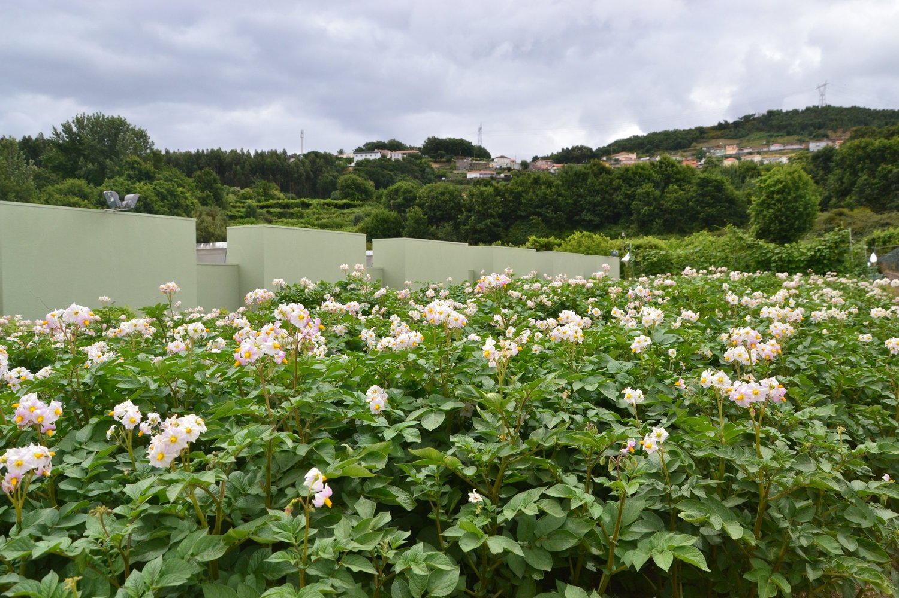

V1 · VogueCover-story editorial — wide Didone masthead, top contact bar, contents page, pull-quotes, parallax. Brown · cream · green · charcoal.Rozha One · Bodoni Moda · Hanken Grotesk

V2 · NoirAfter-dark atelier — fixed side rail, brass hairlines, outlined numerals, scroll strips.Marcellus · Karla

V3 · VerdeOrganic luxury — arches, floating pill nav, garden green and terracotta, rotating badge.Fraunces · Instrument Sans

V4 · GridTechnical spec sheet — ruled cells, giant type, stitch-dashed dividers, contact-sheet galleries.Familjen Grotesk · DM Mono

V5 · CinemaFull-bleed film — viewport-tall panels, sticky split, italic Cormorant, overlay menu.Cormorant · Schibsted Grotesk